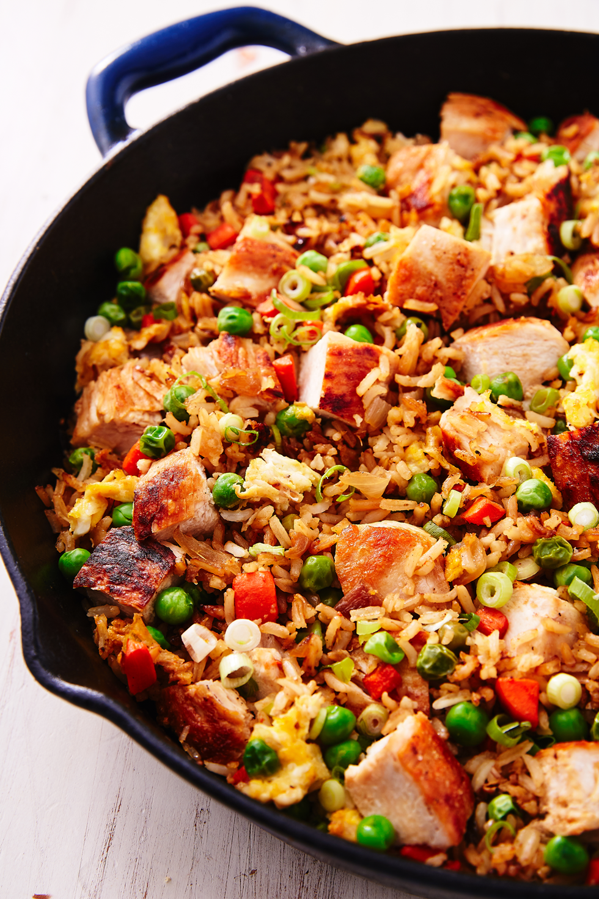

Chicken Fried Rice

Description
This dish started as way to use leftover rice
that has dried out and may not be great on its
own, but is still perfectly edible. The addition
of oil and soy sauce and veggies and meat spruce
up the rice for a delicious meal.
Ingredients
- 2 tbsp. extra-virgin olive oil
- 3 chicken breasts (about 1 1/2 lb.)
- Kosher salt
- Freshly ground black pepper
- 2 tbsp. sesame oil, divided
- 1 medium onion, chopped
- 2 carrots, peeled and diced
- 3 cloves garlic, minced
- 1 tbsp. freshly minced ginger
- 4 c. cooked white rice (preferably leftover)
- 3/4 c. frozen peas
- 3 large eggs, beaten
- 3 tbsp. low-sodium soy sauce
- 2 green onions, thinly sliced